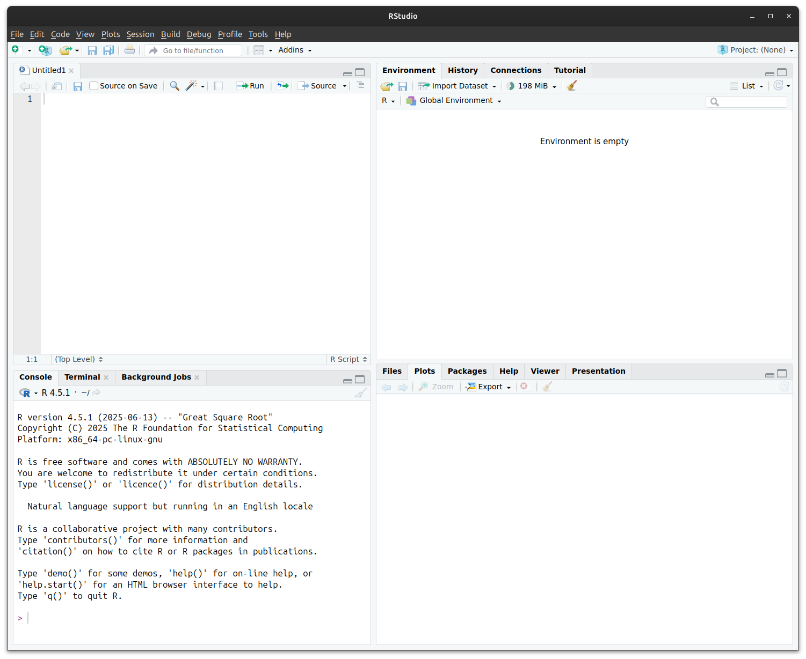
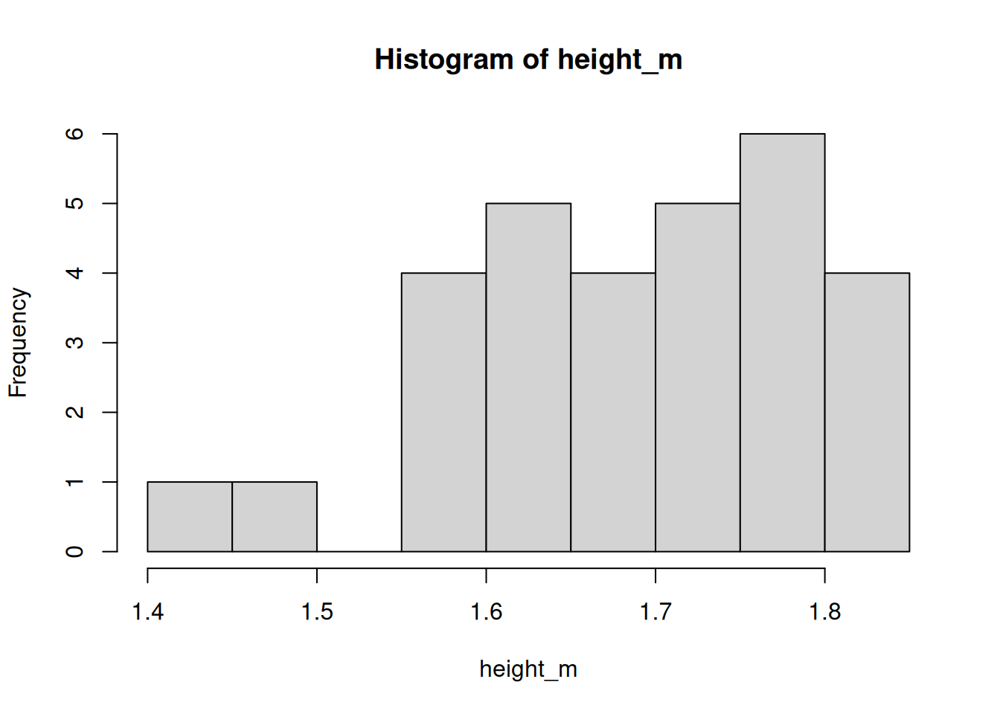

# Heights of sample of students in meters (m)
height_m <- c(
1.56, 1.63, 1.81, 1.69, 1.77,
1.73, 1.59, 1.73, 1.65, 1.63,
1.68, 1.50, 1.80, 1.60, 1.78,
1.68, 1.84, 1.60, 1.64, 1.71,
1.43, 1.76, 1.84, 1.79, 1.75,
1.65, 1.81, 1.78, 1.72, 1.68
)R and RStudio
Basics of R syntax and RStudio functionality
Welcome to statistics using R
This course is designed for students in life sciences learning statistics—maybe for the first time ever! It may also be useful as a refresher before taking a more advanced course, or for those who have some familiarity with statistics but have never used R. You may be familiar with spreadsheets or point‐and‐click statistics software like GraphPad Prism, but have not yet used command‐based tools. We will treat programming as a logical set of instructions—much like a laboratory protocol—that you write, share, and revise.
If you’ve never written a line of code before, that’s perfectly fine—think of programming as writing a recipe or a set of instructions. Unlike point‐and‐click tools, R scripts are reproducible and transparent: anyone can rerun your code and get the same results, or inspect exactly how each number was computed.
Why program instead of click?
- Reproducibility: A script records every step. No more lost settings or hidden menus.
- Transparency: Your analysis is visible in plain text; reviewers can see exactly what you did.
- Flexibility: With code, you can automate repetitive tasks, process large datasets, and customise every step.
- Version control: Scripts work nicely with Git, letting you track changes over time.
In contrast, graphical interfaces may feel easier at first, but they often hide crucial details and make it hard to repeat or share your work.
More reasons to choose R
- Massive community – millions of users; quick answers on Stack Overflow, R-Studio Community, Bioconductor, etc.
- 13 000 + CRAN packages – specialised tools for genomics, ecology, finance, clinical trials, and more.
- Career advantage – R proficiency shows up in data-science, biotech, public-health, and academic job listings.
- Free & open source – zero licence fees (gratis), and you can inspect or modify the source code (libre).
R programming language
R is a programming language and environment specifically designed for statistical computing and data analysis. It provides:
- A comprehensive set of statistical tools, from basic descriptive summaries to advanced modeling.
- Packages that extend R’s functionality contributed by the community, covering specialties from ecology and genomics to finance and social science.
- A flexible scripting interface: you write commands that can be saved, shared, and rerun exactly as you wrote them.
- Built-in graphics, enabling publication-quality visualisations with fine control over every element.
RStudio interface
RStudio is a user-friendly interface for working with R. It brings together:
- Editor: where you write and save your code.
- Console: where you run commands and see results immediately.
- Environment: where you can see the data and objects you’ve created.
- Tabs for files, plots, packages, and help, all in one window.
The RStudio environmnet lets you see your code, files, output etc. all together:

R philosophy: objects, functions and operators
- Everything in R is an object: numbers, text, tables, plots—each is referred to by a name.
- Functions are tools that take objects as input and return new objects as output. For example,
mean(x)takes a numeric objectxand returns its average. - R has a number of operators that let you combine, perform maths, or compare objects.
# Create a numeric object
x <- c(2, 4, 6, 8) # a 'vector' of 4 numbers
x <- seq(from = 2, to = 8, by = 2) # equivalent to above
# Apply the mean() function to the numeric object x
mean(x) # returns 5Special functions in R
Some functions in R are so fundamental that they look a bit different from everyday verbs:
c()– combine values into a single vector.c(1, 2, 3) # numeric vector c("a", "b", "c") # character vector:– creates a simple sequence of integers.1:5 # 1, 2, 3, 4, 5seq()– more flexible sequence builder.seq(from = 2, to = 10, by = 2) # 2, 4, 6, 8, 10rep()– repeat values.rep("A", times = 3) # "A" "A" "A"
💡 These are often called “base R” helper functions — you’ll use them all the time, even when working with more advanced packages.
Operators in R
- Arithmetic operators:
+,-,*,/let you do maths
- Logical operators:
>,<,==,!=let you ask questions such as “is this value bigger than that one?”
- Pipe operator:
|>(or%>%in older code) sends the result of one function into the next, making code step-by-step and clear
- Assignment operators:
<-or=store results in a name
. . .
Here’s how they work:
# Assignment operators
x <- 10 # Give the name x the value of 10
y = 5 # = also works for assignment but is discouraged
name <- "Danna" # Text should be enclosed in quotation marks ""
# Arithmetic operators
2 + 3 # 2 plus 3
5 * 4 # 5 times 4, i.e. 5 × 4
10 / 2 # 10 divided by 2, i.e. 10 ÷ 2
2^2 # 2 to the power of 2
x + y # Adds the value of x and y, i.e. 15
# Logical operators
3 < 2 # Is 3 less than 2? No, returns FALSE
7 != 8 # Is 7 not equal to 8?, Yes, returns TRUE
1 + 3 == 2^2 # Is 1 + 3 equal to 2^2? Yes, returns TRUE. Note the two equals signs!
# Logical operators can also work for text
"Cat" == "Dog" # Is "Cat" equal to "Dog"? No, returns FALSE
"cat" != "CAT" # Is lowercase "cat" not equal to uppercase "CAT"? R is case sensitive.
# Pipe operators
c(1, 2, 3, 4, 5) |> mean() # Mean is equal to 3
c(1, 2, 3, 4, 5) %>% mean() # Equivalent to aboveMore on assignment operators
- Purpose: stores the value on the right-hand side in the named object on the left
- Preferred style:
<-(“gets”) is the long-standing R convention;=also works in most scripts but can clash inside function calls - Read aloud:
weight_kg <- 70👉 “weight_kg gets 70” - Objects are updated in place—re-assigning overwrites the previous value
# Create an object
weight_kg <- 70
# Overwrite (update) it
weight_kg <- weight_kg + 2 # now 72
# Mixing operators is discouraged for readability
height_m = 1.75
bmi <- weight_kg / height_m^2Adding comments to your code: #
- A line starting with
#is ignored by R—use it to explain why a step exists or what it does - This is very helpful to your future self when you want to look back and understand what you’ve done.
- Place comments above or beside the line they describe for quick scanning
- Typical uses
- Section headers:
# ---- load data ---- - Clarify non-obvious maths or units
- Cite data sources or decisions (“drop outliers > 3 SD”)
- Section headers:
# Store leaf length data
length_cm <- c(100, 132, 142, 98, 172) # lengths in mm
# Convert to cm and compute mean
length_mm <- length_cm %>%
mutate(length_cm = length_mm / 10) # convert mm to cm
mean_len <- mean(length_cm) # overall meanPutting it together
Let’s look at a simple example of how these are used. Here’s an example data set, where we recorded the heights of a sample of 30 students in an undergraduate degree programme:
We can calculate the mean and standard deviation (SD) of like so:
# Compute mean and standard deviation
mean_height <- mean(height_m) # 1.69
sd_height <- sd(height_m) # 0.10The mean and standard deviation of student heights is 1.69±0.10 m.
We can also plot the distribution with a simple histogram.
hist(height_m)
We’ll look at a better, more customisable method for plotting in a later workshop.
Working with files in RStudio
- R needs to know where your files live
- This location is called the working directory
- Think of it as the ““”current folder” R looks in when you ask it to read or write a file
Checking the working directory
- Use
getwd()to check where R is currently looking
- Use
setwd("path/to/folder")to change it (but best practice is to use RStudio Projects instead)
getwd() # show current directory
setwd("~/BIOL33031") # set working directory (avoid hard-coding in scripts)Tab completion
- In RStudio, press Tab after typing part of a name to auto-complete
- For objects you’ve created
- For function names
- For file and folder paths
- Helps avoid typos and discover available options
my_long_variable_name <- 42
my_lon # type this, then press Tab → autocomplete!Working with files safely
- Always keep your data and scripts in the same Project folder
- Avoid using absolute paths like
C:/Users/...in your code. This makes it less transferrable if you rearrange files or share your code with someone else. - Use relative paths instead, starting from the project root
# Good
data <- read.csv("data/heights.csv")
# Bad
data <- read.csv("C:/Users/YourName/Documents/data/heights.csv")Getting help in R
- Use
help(mean)or?meanto see function documentation. - Use
help(package = "dplyr")to browse all functions in a package. - The Cheatsheets at https://www.rstudio.com/resources/cheatsheets/ are very handy.
- Google and generative AI (like ChatGPT) are also helpful for finding examples and understanding error messages.
Next steps
You’ve now set up R, learned the basic grammar of objects and functions. In the next section, we will look at a useful add-on package to R–the tidyverse.
❓Check your understanding
Objects
What does the following line of code do?weight_kg <- 65Functions
Ifx <- c(2, 4, 6, 8), what doesmean(x)return?Operators
Which of the following will returnTRUE?5 == 2 + 3
10 < 3
7 != 7
Pipes
Rewrite this code using the pipe operator|>:mean(height_m)Comments
Why is it helpful to add comments (#) to your R code?
What comment would you give to this code block?height_m <- height_cm / 100